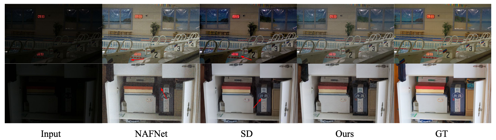

Automatic Image Restoration on Multiple Unknown Degradation

Results on super-resolution with x4 and x8 upscale.

Results on real and synthetic image denoising.

Results on debluring.

Results on dehazing and low light enhancement.